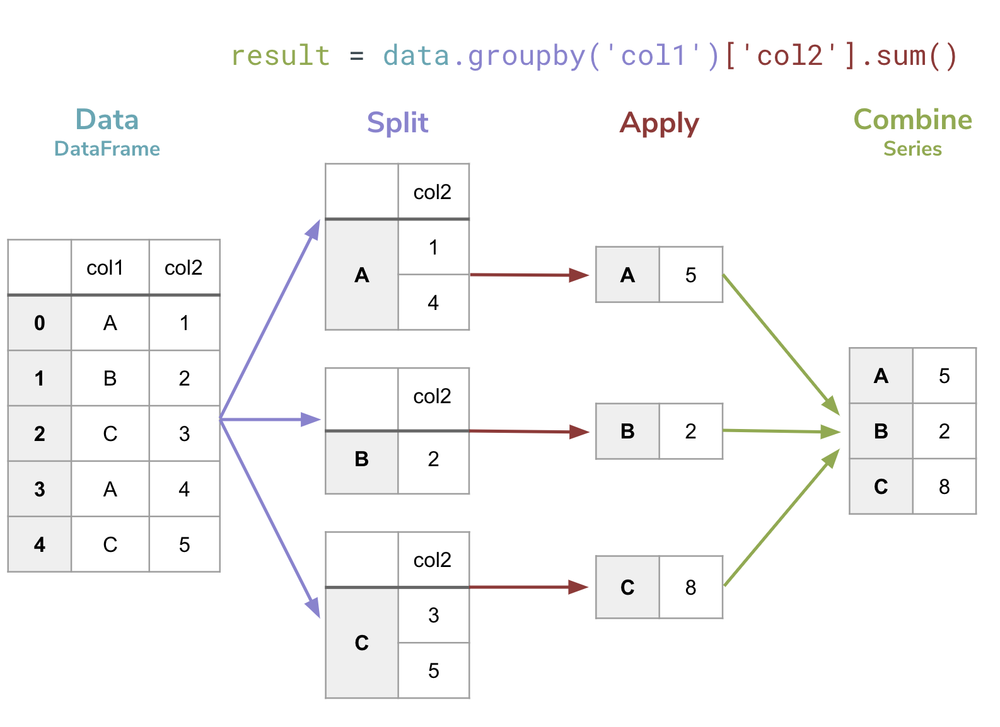

groupby¶
Jupyter Notebooks
Reminder, that on this site the Jupyter Notebooks are read-only and you can’t interact with them. Click the button above to launch an interactive version of this notebook.
With Binder, you get a temporary Jupyter Notebook website that opens with this notebook. Any code you write will be lost when you close the tab. Make sure to download the notebook so you can save it for later!
With Colab, it will open Google Colaboratory. You can save the notebook there to your Google Drive. If you don’t save to your Drive, any code you write will be lost when you close the tab. You can find the data files for this notebook below:
You will need to run all the cells of the notebook to see the output. You can do this with hitting Shift-Enter on each cell or clickin the “Run All” button above.
Think back to the list of dictionaries problem we did last week computing how “shaky” each location was (a made-up metric by Hunter, the wannabe seismologist). The Shake Factor for each location is just the sum of all the magnitudes of earthquakes in that location across all time.
On your next take-home assessment, we will ask you to make computations like this (albeit for a different dataset) and we will ask you to do each problem twice: once processing the data as a list of dictionaries (like you did last week), and again using pandas. It is helpful to understand that the “magic” behind pandas is really just code like you would write for the list of dictionaries! So before showing you how to solve this problem with pandas, let’s walk through the solution here.
Processing a List of Dictionaries¶
For this problem, we want to process the earthquakes.csv as a list of dictionaries and return the result as a dictionary (where the keys are place names and the values are ShakeFactor).
import cse163_utils
# Using the code we wrote to parse the CSV to a list of dictionaries
data = cse163_utils.parse('earthquakes.csv')
data[:5] # First 5 rows
[{'id': 'nc72666881',
'year': 2016,
'month': 7,
'day': 27,
'latitude': 37.6723333,
'longitude': -121.619,
'name': 'California',
'magnitude': 1.43},
{'id': 'us20006i0y',
'year': 2016,
'month': 7,
'day': 27,
'latitude': 21.5146,
'longitude': 94.5721,
'name': 'Burma',
'magnitude': 4.9},
{'id': 'nc72666891',
'year': 2016,
'month': 7,
'day': 27,
'latitude': 37.5765,
'longitude': -118.85916670000002,
'name': 'California',
'magnitude': 0.06},
{'id': 'nc72666896',
'year': 2016,
'month': 7,
'day': 27,
'latitude': 37.595833299999995,
'longitude': -118.99483329999998,
'name': 'California',
'magnitude': 0.4},
{'id': 'nn00553447',
'year': 2016,
'month': 7,
'day': 27,
'latitude': 39.3775,
'longitude': -119.845,
'name': 'Nevada',
'magnitude': 0.3}]
So now to write the code to compute the ShakeFactor, we will follow the following workflow:
Create a result dictionary
Loop through the data
For each earthquake, find its magnitude and place and add the magnitude to the dictionary using the place as the key.
shake_factors = {} # Empty dictionary
for earthquake in data:
place = earthquake['name']
magnitude = earthquake['magnitude']
shake_factors[place] += magnitude
shake_factors
---------------------------------------------------------------------------
KeyError Traceback (most recent call last)
<ipython-input-1-d0c77ffcab06> in <module>
3 place = earthquake['name']
4 magnitude = earthquake['magnitude']
----> 5 shake_factors[place] += magnitude
6
7 shake_factors
KeyError: 'California'
Oops! We ran into the same error we saw earlier in the week when trying to count the number of words in a file. When you use a dict as a counter, you have to make sure the key is present before trying to modify its value with a +=. To fix this, we can add cases for whether or not we have seen this place before.
shake_factors = {} # Empty dictionary
for earthquake in data:
place = earthquake['name']
magnitude = earthquake['magnitude']
if place in shake_factors:
shake_factors[place] += magnitude
else:
# Don't increment, just create the key/value
shake_factors[place] = magnitude
# An alternative solution uses the following structure instead of the if/else
# if place not in shake_facotrs:
# shake_factors[place] = 0
# shake_factors[place] += magnitude
shake_factors
{'California': 3638.4900000000084,
'Burma': 22.200000000000003,
'Nevada': 496.6400000000006,
'Alaska': 3407.0000000000005,
'Hawaii': 375.2099999999998,
'Montana': 91.19000000000001,
'Puerto Rico': 385.99999999999983,
'Chile': 157.79999999999998,
'Dominican Republic': 97.70000000000002,
'British Virgin Islands': 230.09999999999994,
'Indonesia': 298.60000000000014,
'Washington': 176.2199999999999,
'Southern East Pacific Rise': 15.799999999999999,
'Argentina': 49.3,
'Philippines': 85.19999999999999,
'Canada': 99.96,
'Papua New Guinea': 130.3,
'Afghanistan': 43.6,
'Oregon': 107.23000000000002,
'South of Africa': 4.5,
'Peru': 63.800000000000004,
'Fiji': 75.0,
'Japan': 192.60000000000002,
'Oklahoma': 192.79999999999993,
'Mexico': 111.45,
'Kyrgyzstan': 39.8,
'Tennessee': 36.24,
'Tonga': 66.5,
'Arkansas': 6.66,
'South of the Fiji Islands': 77.00000000000001,
'Utah': 71.59,
'Georgia': 4.2,
'U.S. Virgin Islands': 84.49999999999999,
'Idaho': 27.930000000000003,
'Wyoming': 46.29999999999999,
'Iran': 13.299999999999999,
'Syria': 4.4,
'Russia': 122.60000000000001,
'Tajikistan': 53.80000000000001,
'Southwest Indian Ridge': 41.6,
'Anguilla': 2.4,
'Panama': 13.399999999999999,
'Kansas': 47.489999999999995,
'Northern Mariana Islands': 239.00000000000003,
'Christmas Island': 5.0,
'China': 63.900000000000006,
'New Zealand': 88.40000000000002,
'Vanuatu': 43.1,
'Guatemala': 26.300000000000004,
'Greece': 9.4,
'Poland': 4.2,
'Chagos Archipelago region': 4.4,
'Italy': 64.3,
'Virgin Islands region': 1.8,
'New Jersey': 2.33,
'Northern California': 2.45,
'Southern Mid-Atlantic Ridge': 13.6,
'South Sandwich Islands': 19.9,
'South Georgia and the South Sandwich Islands': 99.7,
'Northwest of Australia': 4.1,
'South Indian Ocean': 26.900000000000002,
'Solomon Islands': 45.5,
'Mid-Indian Ridge': 4.9,
'Portugal': 12.999999999999998,
'Ascension Island region': 4.7,
'Azerbaijan': 5.0,
'India': 9.3,
'Kiribati region': 4.6,
'Martinique': 4.6,
'Venezuela': 9.0,
'Bolivia': 12.9,
'Turkey': 8.0,
'Vanuatu region': 4.5,
'Missouri': 20.469999999999995,
'Guam': 9.0,
'Ohio': 1.98,
'Nicaragua': 18.5,
'East Timor': 4.5,
'Northern Mid-Atlantic Ridge': 9.899999999999999,
'Palau': 5.3,
'Colorado': 19.4,
'West Virginia': 2.31,
'New Caledonia': 157.6,
'Australia': 14.5,
'Off the coast of Oregon': 7.199999999999999,
'Virginia': 1.94,
'Costa Rica': 17.7,
'Ukraine': 4.8,
'Colombia': 8.899999999999999,
'East of the Kuril Islands': 4.7,
'Cyprus': 4.1,
'Pacific-Antarctic Ridge': 9.399999999999999,
'Uzbekistan': 4.6,
'Illinois': 7.289999999999999,
'Central Mid-Atlantic Ridge': 4.3,
'Western Indian-Antarctic Ridge': 4.5,
'Ecuador': 8.5,
'South of Panama': 4.6,
'El Salvador': 9.399999999999999,
'Western Xizang': 9.4,
'Azores-Cape St. Vincent Ridge': 4.7,
'North Carolina': 1.92,
'North of Svalbard': 5.0,
'Texas': 2.5,
'Fiji region': 14.600000000000001,
'Reykjanes Ridge': 4.5,
'Arizona': 4.39,
'Pakistan': 4.4,
'Greenland Sea': 4.5,
'New Hampshire': 1.5,
'South Georgia Island region': 86.39999999999999,
'New York': 1.48,
'Central East Pacific Rise': 4.6,
'North of Ascension Island': 9.5,
'Pennsylvania': 1.37,
'Japan region': 11.5,
'Taiwan': 4.2,
'Kuril Islands': 4.6}
And then we are done! It looks like California ended up being the shakiest place based on the ShakeFactor!
What we have just done is implementing what data scientists call a group by operation on the data. One way of describing our algorithm at a high level was we put all the earthquakes into groups based on some key (in this example, the name of the location), and then computed some aggregate value for each group (in this case, the aggregate value is the sum of all the magnitudes for that group).
A group by operation is the generalization of this approach to summarizing data by some group. In general, a group by groups the data based on some attribute and then computes some value for all the values in that group. So to specify a group-by, you need to identify:
How do you identify the group for a particular row? (e.g., name)
How do you compute an aggregate value for all the rows in a group? What column do you use for the computation (e.g., magnitude) and how do you combine them (e.g., sum).
Processing a pandas DataFrame¶
Now, if you were trying to do this with a list of dictionaries, you would have to write specialized code for every different type of group by you might want to try (e.g. finding the max or finding the average). However, with pandas, things become much simpler to write.
Understanding how the list of dictionaries approach works is a good starting point to understand what happens in the background when using pandas.
We will start by loading the data into pandas.
import pandas as pd
df = pd.read_csv('earthquakes.csv')
df
| id | year | month | day | latitude | longitude | name | magnitude | |
|---|---|---|---|---|---|---|---|---|
| 0 | nc72666881 | 2016 | 7 | 27 | 37.672333 | -121.619000 | California | 1.43 |
| 1 | us20006i0y | 2016 | 7 | 27 | 21.514600 | 94.572100 | Burma | 4.90 |
| 2 | nc72666891 | 2016 | 7 | 27 | 37.576500 | -118.859167 | California | 0.06 |
| 3 | nc72666896 | 2016 | 7 | 27 | 37.595833 | -118.994833 | California | 0.40 |
| 4 | nn00553447 | 2016 | 7 | 27 | 39.377500 | -119.845000 | Nevada | 0.30 |
| ... | ... | ... | ... | ... | ... | ... | ... | ... |
| 8389 | nc72685246 | 2016 | 8 | 25 | 36.515499 | -121.099831 | California | 2.42 |
| 8390 | ak13879193 | 2016 | 8 | 25 | 61.498400 | -149.862700 | Alaska | 1.40 |
| 8391 | nc72685251 | 2016 | 8 | 25 | 38.805000 | -122.821503 | California | 1.06 |
| 8392 | ci37672328 | 2016 | 8 | 25 | 34.308000 | -118.635333 | California | 1.55 |
| 8393 | ci37672360 | 2016 | 8 | 25 | 34.119167 | -116.933667 | California | 0.89 |
8394 rows × 8 columns
We will first just show how to do this type of grouping operation in pandas and then we will walk through piece-by-piece to understand what each part of the code is doing.
df.groupby('name')['magnitude'].sum()
name
Afghanistan 43.60
Alaska 3407.00
Anguilla 2.40
Argentina 49.30
Arizona 4.39
...
Washington 176.22
West Virginia 2.31
Western Indian-Antarctic Ridge 4.50
Western Xizang 9.40
Wyoming 46.30
Name: magnitude, Length: 118, dtype: float64
That’s so much shorter to write and computes all the same values!
The way to read this line of code uses the following logic:
dfis theDataFramewe want to process.groupby('name')tells theDataFramewe want it to group all of its rows based on thenameattribute. You should think about this step as forming all the groups.['magnitude'].sum()at the end tells theDataFrameto go to each group, select themagnitudefrom all the rows in that group, and thensumthem up.
You aren’t just restricted to using sum, you can use any of the Series methods we learned earlier like min, max, average. You can also group by any attribute or use any attribute for your computations!
Interestingly enough, the final result is a Series that uses the place names as its index, and the values are the values computed. That means you could do something like, find the ShakeFactor for California specifically.
shake_factor_pandas = df.groupby('name')['magnitude'].sum()
shake_factor_pandas['California']
3638.4900000000084
What’s going on here?¶
It’s pretty incredible that such a short line of code can do something so complex. In the bullet-list above, I described the steps that happen here but I find it easier to think about it with a small example. The figure below shows a visual explanation of what is going on when you do a groupby.
(Teal,
data) You start by specifyingDataFrameyou want to do this computation on(Purple,
.groupby('col1')) You then call thegroupbyfunction on thatDataFramepassing as a parameter the column that will form the groups. This splits the data up into groups based on the provided column.Notice this does NOT use the
[]notation! This is not accessing a column of theDataFrame, but rather is calling a function passing a parameter
(Red,
['col2'].sum()) Specify which column we want to aggregate (e.g.,col2) and what function we should use to make the aggregate (e.g..sum()). The turns each group into a single value.Notice in this part we DO use the
[]notation since we are accessing a particular column
(Green,
result =) The return value of this call is aSeriesthat has the index being the keys defining the groups and values being the aggregate value for that group.

To get a better idea of this, let’s explore the return of the groupby without doing step 3 of specifying an aggregate.
# Make a DataFrame by giving it a list of dictionaries
example_data = pd.DataFrame([
{'col1': 'A', 'col2': 1},
{'col1': 'B', 'col2': 2},
{'col1': 'C', 'col2': 3},
{'col1': 'A', 'col2': 4},
{'col1': 'C', 'col2': 5},
])
example_data
| col1 | col2 | |
|---|---|---|
| 0 | A | 1 |
| 1 | B | 2 |
| 2 | C | 3 |
| 3 | A | 4 |
| 4 | C | 5 |
groupby = example_data.groupby('col1') # Notice no aggregate
groupby
<pandas.core.groupby.generic.DataFrameGroupBy object at 0x7f0a79ff2bb0>
This returns a special pandas object called a DataFrameGroupBy. This represents an “unfinished” groupby operation since we have not computed an aggregate yet. One feature that is kind of helpful for seeing what’s going on (but you will probably rarely use in practice) is the fact you can loop over a DataFrameGroupBy to inspect the groups.
for key, group in groupby:
print('==== Next Group: ' + str(key) + ' ====')
display(group) # To get the fancy Jupyter Notebook display of table
==== Next Group: A ====
| col1 | col2 | |
|---|---|---|
| 0 | A | 1 |
| 3 | A | 4 |
==== Next Group: B ====
| col1 | col2 | |
|---|---|---|
| 1 | B | 2 |
==== Next Group: C ====
| col1 | col2 | |
|---|---|---|
| 2 | C | 3 |
| 4 | C | 5 |
This is why when we do finish the computation, we get the sum of all these rows that fell into each group
result = example_data.groupby('col1')['col2'].sum()
result
col1
A 5
B 2
C 8
Name: col2, dtype: int64
Again, it’s important to highlight that result is a Series that has indices equal to the group keys. You can see in the cell below we print out its type and show how to access a particular value. We also show how you can view the indices of a Series (also works for DataFrames).
print(type(result))
print(result.index)
print(result['C'])
<class 'pandas.core.series.Series'>
Index(['A', 'B', 'C'], dtype='object', name='col1')
8
When to use this?¶
Whenever you want to separate your data into groups to get some value for each one, this is the natural time to ues a groupby! Whenever you see “for each” or “per” in a question, it’s likely you will want to use a groupby.
Here are some example questions you can solve with a groupby. We provide some “code” to compute each one, assuming the data had columns with the relevant names.
Compute the number of students per section
grades.groupby('Section')['StudentID'].count()
Compute the average grade of students in each section
grades.groupby('Section')['Grade'].mean()
Compute the total number of people in each country
cities.groupby('country')['population'].sum()